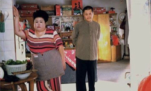
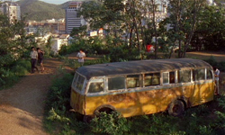
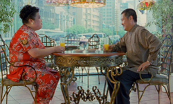
Happy Times is loosely based on the short story, "Shifu: You’ll Do Anything for a Laugh" by Mo Yan and was co-produced by Terrence Malick. Zhao is an aging bachelor who hasn't been lucky in love. Thinking he has finally met the woman of his dreams, Zhao leads her to believe he is wealthy and agrees to a wedding far beyond his means.
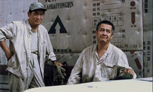
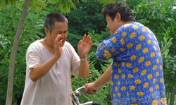
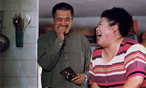
Zhao is set on marrying a chubby girl, and to accomplish that, he has to persuade her that he is financially stable. In order to do that, he comes up with a rather preposterous idea: to transform an abandoned bus into a hotel and present himself as the owner. However, things become more complicated when his love interest asks him to hire her adopted daughter, who is blind. Furthermore, eventually the local government decides to pull the bus from the place it was stationed. Zhao, however, has grown fond of the girl, and is determined to fight the authorities.
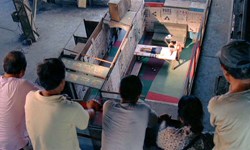
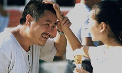
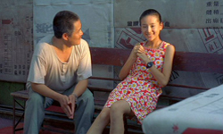
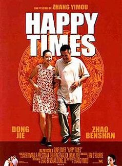
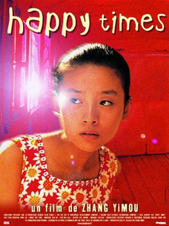
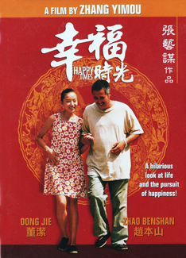
Zhang directs a bittersweet story about the transformation of a naive, lying, and self-indulgent bachelor to a sensitive man who is willing to go to extremes to take care of the girl. His love also transforms the girl, who becomes more courageous and starts believing in herself through his love and care. On a second level, Zhang highlights the fact of how a single event can change people’s lives, and through this, he makes a comment about the political situation in the country. However, the film becomes overly sentimental and melodramatic after a point, and this sense spoils much of the film’s strengths.
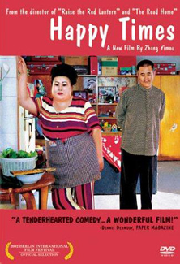
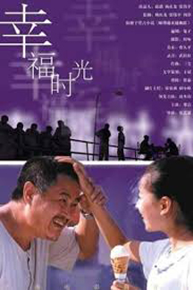